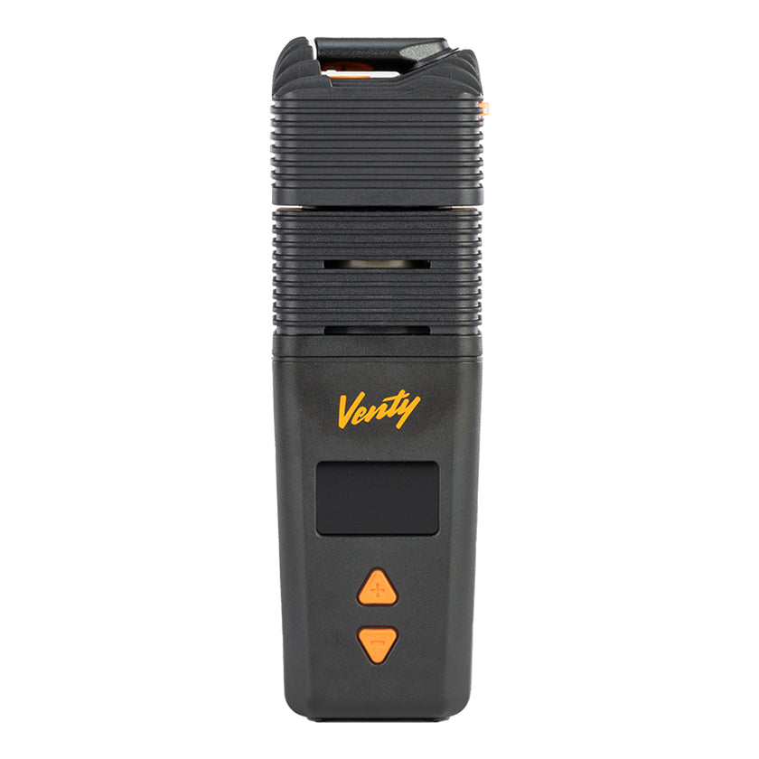
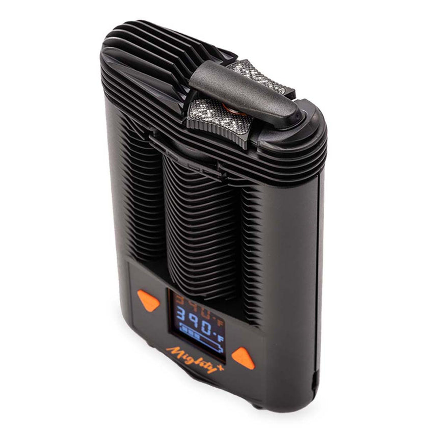
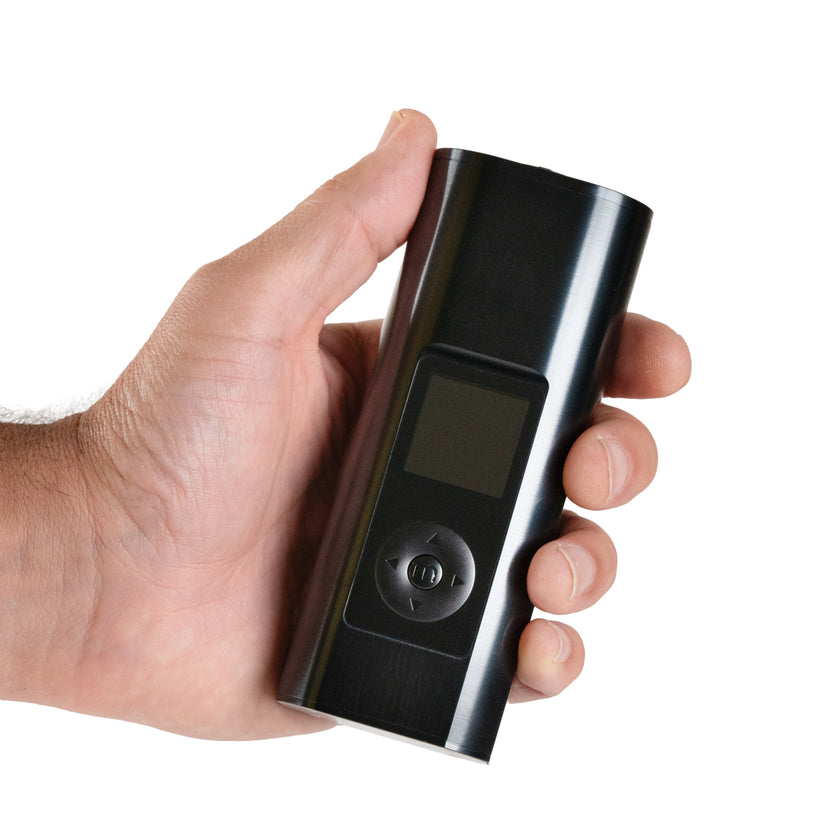
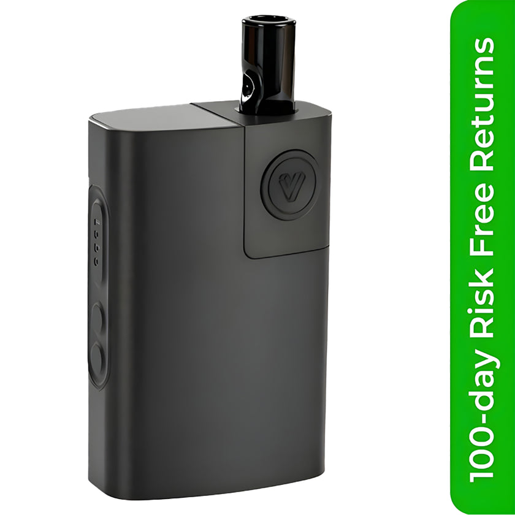
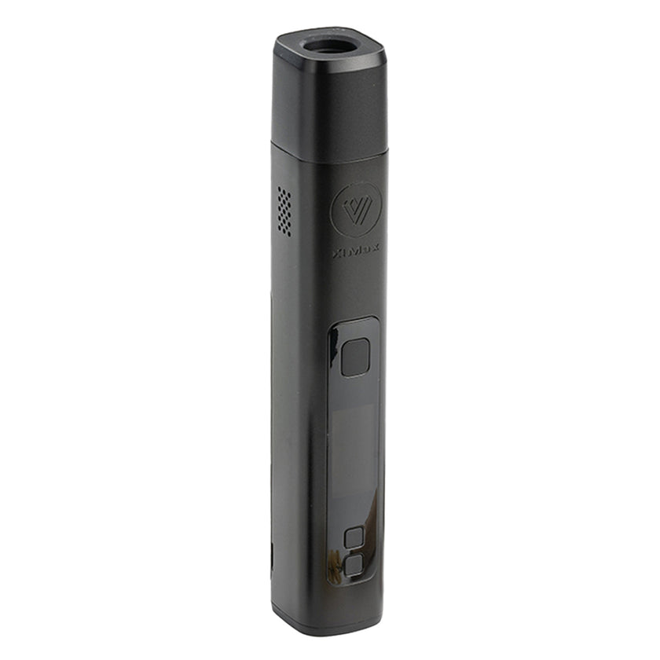

Best Dry Herb Vaporizers 2026
A Cannabis Lover’s Guide (Not a Tech Review)
By Blazin Bill • April 23, 2026 • 12 min read • Updated monthly
Most “best vaporizer” lists are written by people who test devices. This one is written by someone who tests weed. The difference matters.
I don’t care about Bluetooth connectivity scores or how many apps a vaporizer supports. I care about one thing: does this device let me taste the terpenes that a grower spent months cultivating?
A budtender named Thomas changed how I shop for cannabis last month. His core lesson: the grower matters, the terpene profile matters, and THC percentage is the most overrated number in dispensaries. So when I evaluate a vaporizer, I’m evaluating it as a terpene delivery system. Can it extract the limonene from a Runtz? The pinene from a Jack Herer? The linalool from a Granddaddy Purple?
Here are the five vaporizers I actually use, ranked by how well they serve the plant.
1. Storz & Bickel Venty — Best Overall

Heating: Hybrid (convection + conduction)
Heat-up: 20 seconds
Battery: USB-C, all-day
Best terpene temp: 340–365°F
The Venty is what happens when the world’s most respected vaporizer manufacturer decides to build the best portable they can, price be damned. And they did it.
Twenty seconds from cold to session. Single-degree temperature precision. A heater that’s three times more powerful than the Mighty+. USB-C charging that actually fills the battery in reasonable time. And the vapor — dense, cool, full of flavor from first draw to last.
Why it wins for terpene lovers: The Venty’s hybrid heating system extracts terpenes more completely than pure conduction devices. At 345°F, I get the limonene citrus notes from a Runtz before the heavier myrcene kicks in at 365°F. You can actually step through a strain’s terpene profile by starting low and increasing 5°F at a time. No other portable does this as precisely.
The honest downside: $375 is a lot of money. If you’re not sure you’ll vaporize regularly, start with the XMAX V3 Pro at $100 and upgrade later. But if you know you’re committed, buy the Venty first and skip the upgrade ladder entirely.
2. Storz & Bickel Mighty+ — Best for Most People

Heating: Hybrid (convection + conduction)
Heat-up: 60 seconds
Battery: USB-C, solid
Best terpene temp: 350–375°F
The Mighty+ is the Honda Civic of vaporizers. Not glamorous. Not the newest. But there’s a reason it’s the most popular dry herb vaporizer in the world and has been for years: it just works, every single time, without drama.
Medical researchers use it in clinical studies. Cannabis-friendly physicians recommend it to patients. It’s been used to evaluate terpene profiles in laboratory settings. When your device is “trusted enough for science,” you know the engineering is real.
Why it wins for most people: No app required. No Bluetooth pairing. No firmware updates. Turn it on, set your temperature, wait 60 seconds, and inhale. The cooling unit produces smooth, cool vapor that doesn’t irritate. It’s the vaporizer you recommend to your parents — which is exactly what I did in my book WEED: A Senior’s Guide to Cannabis.
The honest downside: Slower heat-up than the Venty (60 seconds vs 20). Slightly less flavor resolution at the top end. But $100 cheaper, and the reliability is bulletproof.
3. Arizer Solo 3 — Best for Flavor

Heating: Pure convection
Heat-up: 30 seconds
Battery: Excellent (all-day+)
Best terpene temp: 335–360°F
If you care about tasting exactly what the grower intended, the Solo 3 is your device. Pure convection heating through a borosilicate glass stem means zero interference between the herb and your palate. No plastic. No metal. Just glass, hot air, and terpenes.
The first time I vaped a Peninsula Gardens Runtz through a Solo 3 at 340°F, I tasted tropical notes I’d never noticed when smoking the same strain. That’s the Solo 3’s magic — it reveals layers in flower that other methods destroy.
Why it wins for flavor: The glass stem acts as both the vapor path and a visual indicator — you can literally see the vapor forming. Easy to clean (drop the stem in isopropyl alcohol), impossible to break the device itself, and the battery lasts longer than any session you’ll have.
The honest downside: The glass stems are fragile (buy a spare). The device is slightly bulky for pockets. And it’s a sipper, not a cloud machine — if you want huge rips, this isn’t it.
4. POTV Lobo — Best Value

Heating: Hybrid
Heat-up: Fast
Battery: Good
Best terpene temp: 345–370°F
The Lobo is Planet of the Vapes’ own device, and it has no business being this good at $150. Precise temperature control, fast heat-up, compact enough for a back pocket, and vapor quality that competes with devices at twice the price.
I keep a Lobo on my nightstand. It’s the vaporizer I reach for when I don’t want to think — load, press, inhale. For a Northern Lights session at 370°F before bed, it delivers exactly what I need without the ceremony of a $375 device.
Why it wins on value: At $150, you get features that used to require $250+. The step from no vaporizer to a Lobo is bigger than the step from a Lobo to a Venty. Start here if you’re not sure vaporizing is for you.
The honest downside: It’s not a Storz & Bickel. The vapor quality is 80% of the Mighty+ at 55% of the price. That’s an excellent trade for most people, but if you’ve used a Mighty+ first, you’ll feel the difference.
5. XMAX V3 Pro — Best Under $100

Heating: Conduction + on-demand
Heat-up: 30 seconds
Battery: Removable (swappable)
Best terpene temp: 350–380°F
The XMAX V3 Pro is the gateway drug. (Sorry.) It’s the vaporizer that costs so little you feel reckless not trying it, and then you realize vaporizing is better than smoking and you never go back.
At $100, it has features that devices twice its price don’t: a removable 18650 battery (carry spares for infinite sessions), an on-demand heating mode (take one hit and put it down), and full temperature control.
Why it wins at this price: The removable battery alone makes this worth it. No other vaporizer at this price lets you swap batteries. When your battery dies mid-session, pop in a fresh one and keep going. For camping, festivals, or just heavy use, this is the practical choice.
The honest downside: Conduction heating means slightly less flavor purity than convection devices. The build quality is functional, not luxurious. And the stock mouthpiece could be better — the glass mouthpiece accessory is worth adding.
How to Choose
Forget the spec sheets. Here’s what actually matters:
If money is not a concern: Buy the Venty. End of discussion.
If you want the safest recommendation: Buy the Mighty+. Nobody regrets a Mighty+.
If you care about flavor above all else: Buy the Arizer Solo 3. Glass vapor path, pure convection, nothing between you and the plant.
If you want to try vaporizing without committing: Buy the XMAX V3 Pro at $100. If you love it, upgrade later. If not, you’re out a hundred bucks, not four hundred.
If you want the sweet spot: Buy the POTV Lobo at $150. Best performance-per-dollar on this list.
The Temperature Guide: Terpenes by Degree
This is the part most vaporizer guides skip. Temperature isn’t a preference — it’s a terpene extraction tool. Each terpene has a boiling point, and your temperature setting determines which ones you taste.
| Temp Range | Terpenes Released | Experience |
|---|---|---|
| 315–340°F | Pinene, Limonene | Light, flavorful, cerebral. Best for tasting a new strain. |
| 340–365°F | + Linalool, Myrcene | Balanced. Flavor + effect. The sweet spot for most sessions. |
| 365–385°F | + Caryophyllene, Humulene | Full extraction. Stronger body effects. Evening sessions. |
| 385–410°F | Everything + THC max | Maximum extraction. Less flavor, more potency. Last hits of a session. |
The step-up method: Start your session at 340°F. Take 3–4 draws. Increase by 10°F. Repeat. This walks you through the strain’s entire terpene profile from lightest to heaviest. It’s the single best reason to own a vaporizer with precise temperature control. Read more in our terpene smell test guide.
Where to Buy
We buy from Planet of the Vapes. Free shipping on every order, a price-match guarantee, free grinder and accessories included with most purchases, and genuinely knowledgeable customer support. They’re an authorized dealer for every device on this list.
More Reading
- The Nose Knows: How a Budtender Changed How I Shop — the terpene smell test story
- Tasting Notes #1: Runtz by Peninsula Gardens — first strain review from the $600 haul
- The Wake & Bake Protocol — morning strains and terpene science
Go deeper on terpenes, strains, and dosing:
Get WEED: A Senior’s Guide to CannabisAffiliate Disclosure: This page contains affiliate links to Planet of the Vapes. We earn a commission on purchases at no extra cost to you. We only recommend devices we personally own and use.
Last updated: April 2026. We review and update this guide monthly. Prices may change.